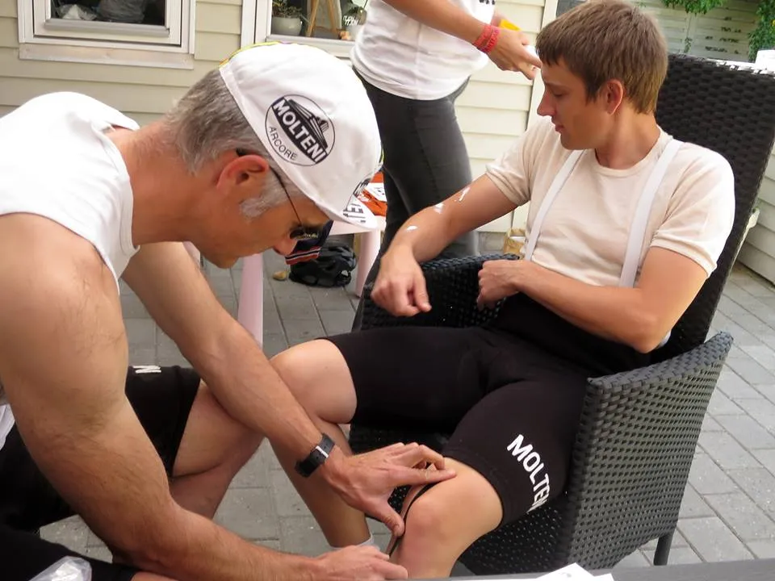
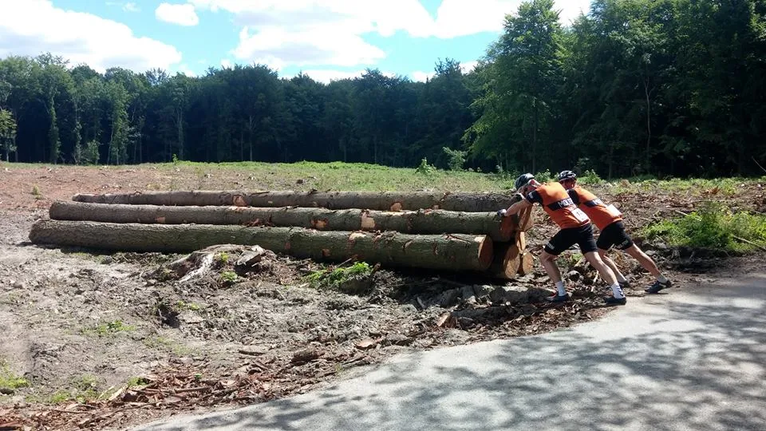
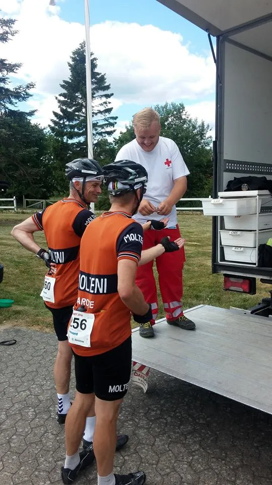
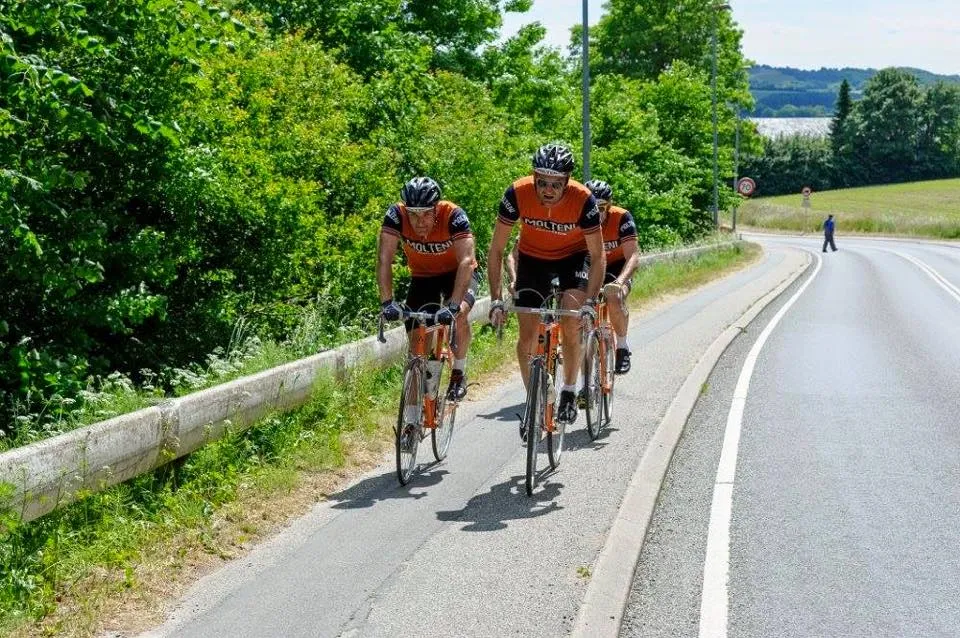
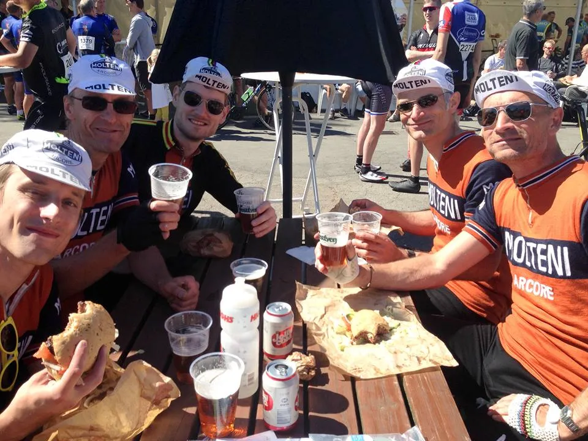

Fyen Rundt 2016: Skader, punkteringer, styrt – og 2 x belgisk cocktail

Det blev et højdramatisk Fyen Rundt 2016 for Squadra Molteni. Ryttere med knæskader, to punkteringer, en rytter der måtte en tur i asfalten – gjorde Fyen Rundt til et lige lovligt spændende løb.
Kaspers knæ og hormoner
Squadra Moltenis løjtnant Kasper Sørensen har været plaget af en knæskade i et stykke tid. Det samme har hans bror, Steffan. Kasper valgte derfor, at skåne knæet og stillede derfor op på den korte rute.
Det blev et løb i overhaingsbanen, hvor Kasper lagde sig på smækken af ungdomsafdelingen i Cykling Odense, som ikke kunne holde hormonerne i ro på nogen af de midtfynske bakker.
Efter 35 km. røg Kasper afsted sammen med en Odense- og Kerteminde rytter. Kasper gav den fuld gas, og førte trioen godt over Vissenbjerg, før det gik mod stregen i Odense. Efter at være kørt forkert på opløbet, lavede Kasper et perfekt lead-out for de to unge talenter, som spurtede om sejren, hvor Kerteminde tog det længste strå. Kasper tog 3. pladsen på sin Fyen Rundt 2016 distance på 1 time og 43 minutter.

Skift af slange på fantomtid
Steffans knæ havde fået ro en uges tid – og han satsede på at det holdt de 180 km.
Lidt over klokken 9 stillede Niels Bjørnsteen, Grane Maaløe, Eigil Leegaard og Steffen Sørensen til start i Odense på 180 km-ruten. Vejret var subtropisk – og humøret højt.
Vi fløj afsted i et godt felt – og vi nåede til Svendborg på 2 timer (et snit på godt 40 km/t). I Svendborg ramte feltet “Galgebakken“. Her fik Grane lidt krampe – Men fightede sig op. Feltet var kørt, så Molteni-kvartetten lå pludselig alene.
På vej mod Fåborg fik vi kørt lidt ryttere op, som hoppede på det orange eksprestog. Men kort får Fåborg punkterer Steffan. Hans slange blev skiftet på en fantomtid – lige under dansk rekord – men toget kunne ikke køre: Grane og Eigil skulle lige “vælte et par træsammer”. De gamle stive ben skulle lige strækkes ud.
Afsted gik det igen. I voldsomt opskruet tempo mod Fåborg. Men mindre en ti minutter efter punkterede Steffan igen. Endnu en dansk rekord blev sat i slangeskift – men heller ikke denne gang var toget klar. I et hus på den anden side af vejen var Grane i færd med at hente vand til hele holdet. God fynsk vand for øvrigt.

Belgisk cocktail og styrt
Afsted gik det endnu engang. Svanninge Bakker blev forceret i et vildt tempo – og måske derfor begyndte de små underliggende kramper at nive lidt. Recepten var klar. Vi måtte i depot og have mere vand.
I Jordløse lå depotet og ventede på os. Der blev fyldt vand på, fyldt bananer og frugtstænger i lommerne. Da vi skulle til at køre, var Grane og Eigil væk! Efter en kort scanning af depotområdet, fandt vi dem ved samarit-bilen. Her havde de to fået tilsjusket sig en mild udgave af en belgisk cocktail bestående af ipren og pacitamol.
Da vi forlod depotet var Grane og Eigil selvlysende – og velkørende. Eigil havde måske fået en lige stærk nok cocktail, for i Tommerup overså han en kantsten ved en cykelsti – hvilke resulterede i styrt.

Kaptajn Bjørnsteen lavede et hurtigt tjek: Ben; hudafskrabning, men ok. Arme; hudafskrabning, men ok. Cykel; styr skævt. Det blev rettet op. Afgang.
Carbonryttere i slipstrømmen
Bjørnsteen, der for et kys til depotpigen, havde fået to bananer og to frugtstænger, var i over-load. Han hamrede derud af i spidsen for toget. Eigil var, efter blodet på ben og arm var størknet, også oppe i førehuset og hælde kul på.

Ti kilometer inden Vissenbjerg havde Molteni-toget fået en lang hale af carbonryttere på slæb i slipstrømen. Ved Vissenbjerg, hvor der var bakkespurt, fik Eigil lov til at give den gas. Han trykkede den kraftigt af, og fik faktisk en tid i top 50.
De sidste 20 km. mod Odense satte Bjørnsteen og Eigil tempoet en smule op. Der røg vist lidt carbonryttere af på den bekostning. Men Grane og Steffan lå flot i formation.
Vi kørte ind på opløbsstrækningen side om side. Den bagvedliggende håndfuld carbonryttere takkede for liftet.
Epilog: Fyen Rundt 2016
Steffans knæ klarede de 180 km godt. Grane håndterede de underliggende kramper perfekt, Eigil var, trods styrt, stærk som altid og Bjørnsteen havde endnu en dag med diamanter i benene.
Fyen Rundt 2016 blev endnu et skønt løb. Squadra Molteni er top klar til La Marmotte om tre uger.
